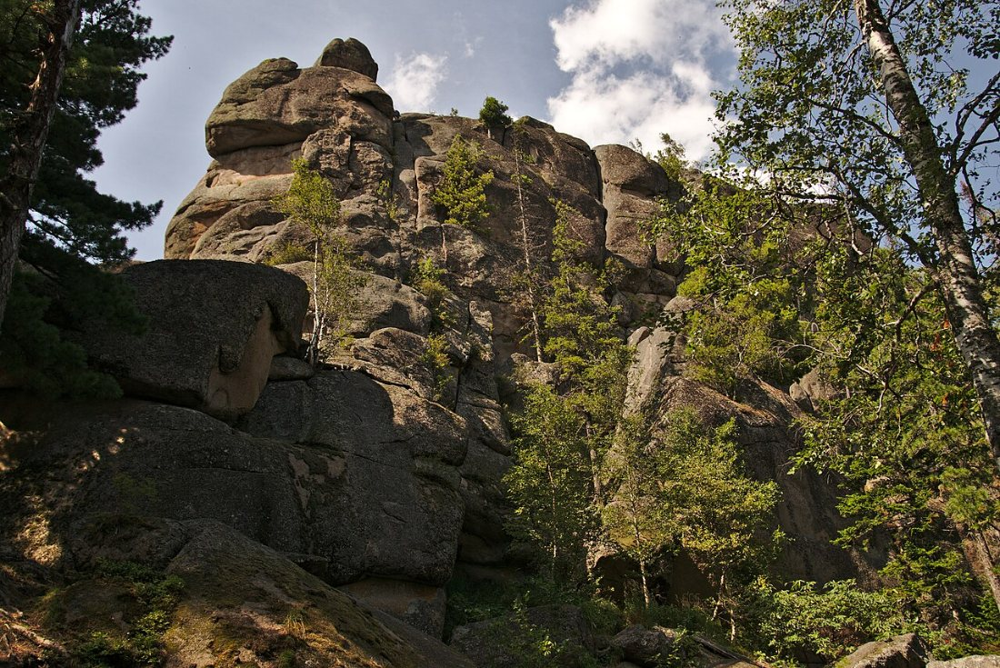
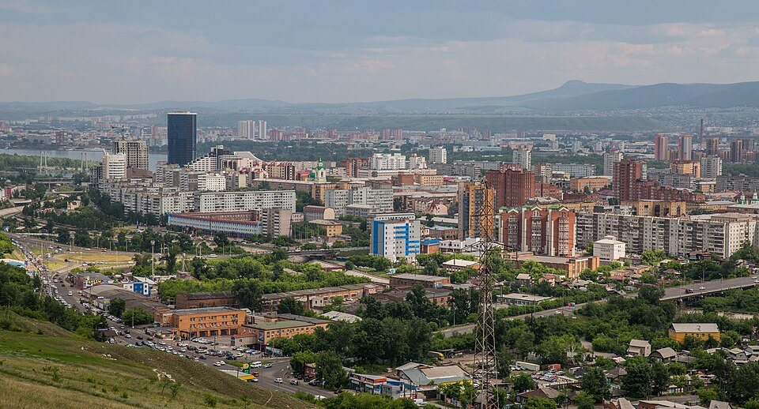
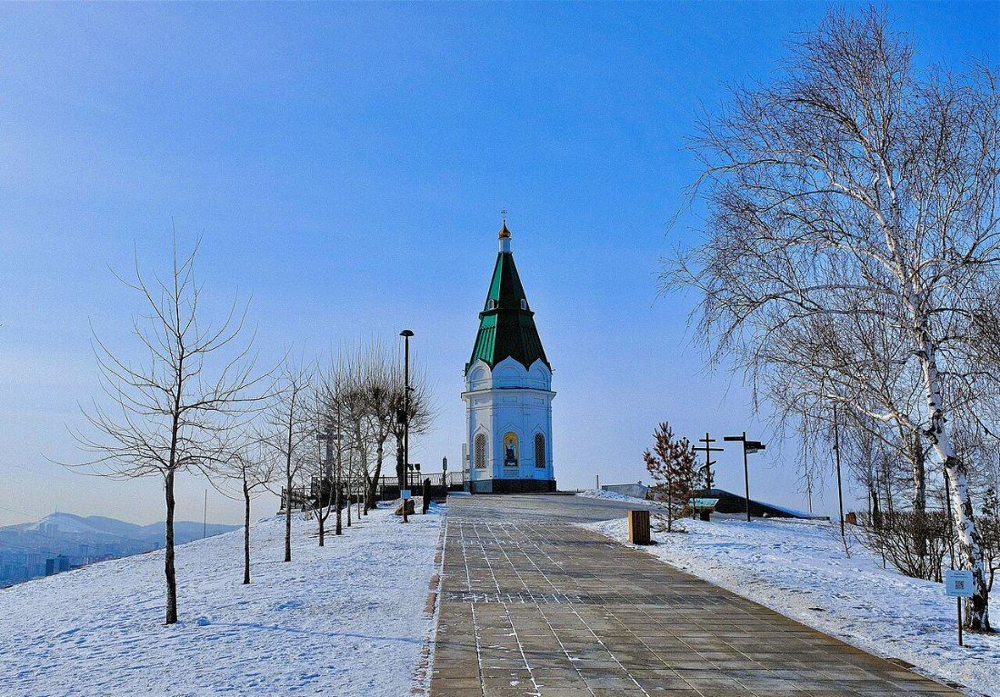
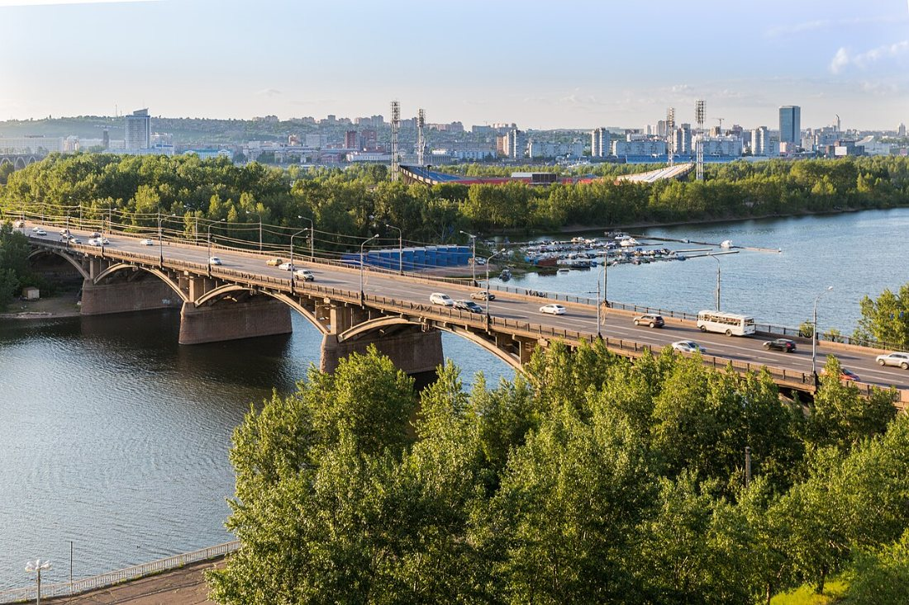
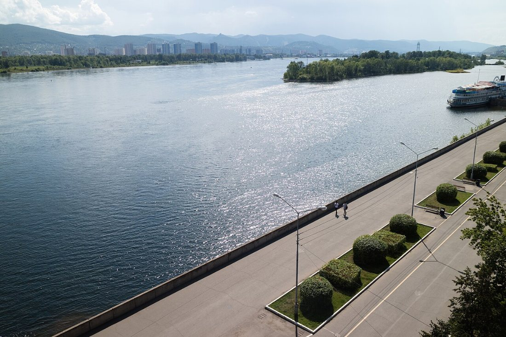

Красноярские Столбы
Скалы-великаны в тайге и один из старейших заповедников России.
город на Енисее: скалы, мосты и сибирская история

Красноярск — один из крупнейших городов Сибири, расположенный на берегах Енисея. Город сочетает исторические здания, культурные объекты и уникальные природные достопримечательности: прямо на его окраине начинается заповедник «Столбы», а в черте города на реке лежат зелёные острова.
Красноярск был основан в 1628 году как острог Красный Яр. Сегодня это город с населением более миллиона человек, крупный научный, промышленный и культурный центр Красноярского края.

Скалы-великаны в тайге и один из старейших заповедников России.

Символ города на вершине Караульной горы.

Арочный мост через Енисей, изображённый на 10-рублёвой купюре.

Здание в «египетском» стиле на набережной.

Главная музыкальная сцена Красноярска.

Место прогулок с видом на реку и острова.
Вы можете скачать текстовый путеводитель по сайту в формате Word (.docx) или простого текста (.txt). Вопросы и пожелания присылайте по электронной почте: frolova2007e@yandex.ru.